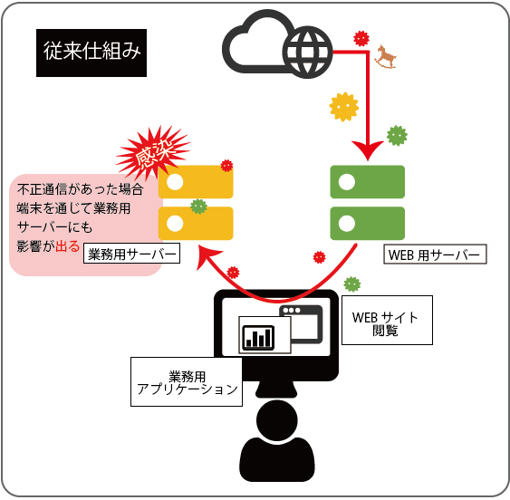
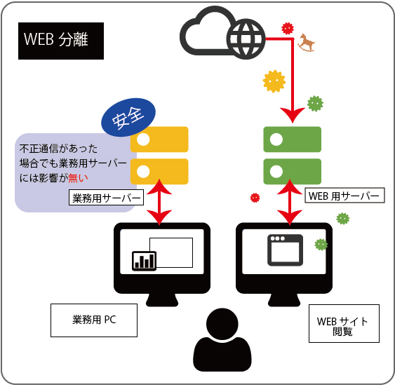
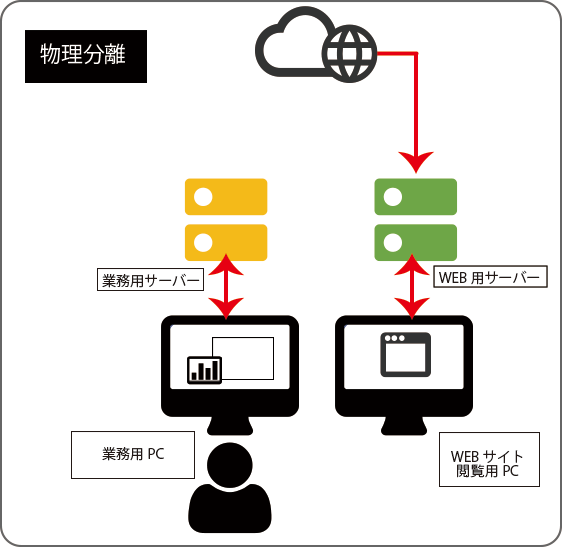
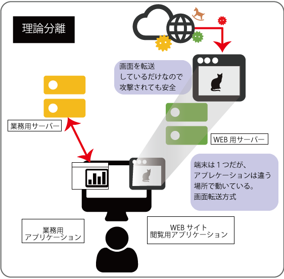

Web分離（インターネット分離）導入の3つのポイン
総務省セキュリティ対策で注目のWEB分離（インターネット分離）
について詳しく解説します。
コンピューターウィルスは「メール開封で感染」といった事例から「インターネット閲覧だけで感染」「感染したことに気づかないでいた」など、悪質で巧妙なものが年々増えているのが実情です。
感染した事に気が付かない場合、その様々な攻撃は企業にとって大きなリスクになります。そういったマルウェア対策として、Web（インターネット）通信へのセキュリティ対応はどんな業態でも今後必須といえるでしょう。
現状の対策だと、ウィルスソフトやフィルタリングなどをベースとしたソリューションを組み合わせた対策が一般的です。しかし、攻撃と防御のイタチごっこで、中小企業などでは対策が追い付かないのが悩みでしょう。
そこでセキュリティ強化策として、Webコンテンツの実行環境を業務環境から分離することで、情報漏洩や外部からの攻撃のリスクを抑止する「Web分離（インターネット分離）」が注目されています。
（経済産業省が2016年12月に発表した「サイバーセキュリティ経営ガイドライン」にも推奨されています。）
WEB分離の一般的な仕組みなどを以下でご紹介します。
もくじ
1-1 WEB分離（インターネット分離）とは
1-2 WEB分離（インターネット分離）の特徴と手法
1-3 WEB分離にかかる一般的な導入費用や仕組み
2-1 WEB分離（インターネット分離）導入を検討する際の3つのポイント
3-1 WEB分離（インターネット分離）に最適なGO-GLOBAL
1-1.WEB分離（インターネット分離）とは
インターネットからの攻撃や不正アクセス対策として、 業務用ネットワークからウェブ閲覧を、分離することを「インターネット分離」といいます。Webコンテンツを閲覧する環境と、業務を行っている環境を分離することで、マルウェアの侵入や、サイバー攻撃のリスクを抑えます。
WEB分離（インターネット分離）


ネットワーク間のアクセス制御（分離）を行う考えは、特に新しい考えではなく20年ほど前から存在していました。しかし、Web分離（インターネット分離）は低コストで、導入の手間がかからず管理も最小限で済む。と言った理由から近年また注目されている手法の一つとなっています。
1-2.WEB分離（インターネット分離）の特徴とその手法
大まかにわけてWEB分離（インターネット分離）には以下の方法があります。
メリット： 端末を分けているので、インターネットから重要なシステムにアクセスすることができない。物理的に分かれているのでインターネット経由からの攻撃やデータ漏洩が無い。
デメリット： 一人２台パソコンを持つことになり機器が代金が２台分必要になる。 複数台用意しても、インターネットに接続できる別端末に移動するため利便性が悪い。台数が少ないと端末を使用するための渋滞がおきてしまう。 USBメモリなどからのコピーや漏洩といった感染リスクは避けられない。
メリット： 画面を転送している状態だが、ブラウザの操作感に違和感がない。一台の端末でインターネットと業務システムに接続できるので、コスト削減と管理の軽減が期待できる。
デメリット： 倫理分離の手法も様々なので、その手法によっては高額な費用が掛かる場合もあります。
1-3 WEB分離にかかる一般的な導入費用や仕組み
論理分離には主に以下の手法があります。
| 方式 | メリット | デメリット | |
|---|---|---|---|
| VDI式 画面転送 | 分離した仮想デスクトップサーバー上で表示した個々のデスクトップ画面を端末側に転送する |
・一台でインターネットと社内システムに接続可能 ・ブラウザの操作に違和感がない ・ブラウザ以外の製品利用できる |
・VDAが必要（コストが高い） ・利用する際にVDIにログインする必要がある |
| 仮想ブラウザの画面転送 | 分離した環境のブラウザ画面を端末側に転送する |
・一台でインターネットと社内システムに接続可能 ・ブラウザの操作に違和感がない ・1つのサーバーで多くのセッションを実行ができる |
サーバーOS側がマルウェア感染すると、全体に影響が及ぶ |
環境や社内の利用状況によって、WEB分離（インターネット分離）の方式を検討するのがよいでしょう。
その他に「Docker型のセキュアブラウザ」「HTML5型のセキュアブラウザ」も存在します。どちらも低価格なセキュリティブラウザとして利用されています。
しかし、「Docker型のセキュアブラウザ」はIE専用のサイトの閲覧ができない、HTML5型のセキュアブラウザは印刷がうまくいかないなどの制限事項があります。
WEB分離の導入費用
物理分離の場合
業務用端末とインターネット接続端末を２台用意する必要があり100人いれば200台パソコンが必要になりますのでそのコストは膨大です。
WEB分離（インターネット分離）の場合
一般的にユーザーの数で月額の利用などが決定します。
しかし、その決定方法も様々で、100ユーザー分購入したくても、500ユーザー単位からの購入が求められたりする場合もあります。
細かく設定できない場合は、余計なコストがかかるでしょう。
その他にサーバーへのライセンス費用、システムのライセンス費用、画面転送を使う時に利用するライセンス費用などが、掛かる場合もあります。
提供しているインターネット分離のサービス内容をしっかり確認してランニングコストを含め検討が必要となります。
2-1.WEB分離（インターネット分離）導入を検討する際の3つのポイント
① ユーザーの使用感に違和感がない
② 短期間で導入可能
③ セキュリティが高い
作業環境やアクセス環境に弊害があっては、業務に支障がでてしまいます。
WEB分離後も快適な環境で作業できるかどうかもしっかり確認する必要があります。
早くて30日、規模にもよりますが長いものだと、3カ月かかるということもあります。
導入期間が長くなれば、その間のセキュリティはウィルスの脅威にさらされている状態です。
必要なセキュリティ状況をしっかり見極めて、導入を検討しましょう。
3-1 WEB分離（インターネット分離）に最適なGO-GLOBAL
上記のポイントを抑え中小企業向けにお勧めできるのがGO-GLOBAL（ゴーグローバル）です。２０年前から、シンクライアント技術に着目しており、その歴史から得た実務経験と技術ノウハウが蓄積しています。
しかも、GO-Globalはあらゆる場所、プラットフォーム、OSからWindows、UNIX、Linuxアプリケーションへの即時アクセスを提供できるのが最大の特徴です。
GO-GLOBALを利用したWEB分離環境

WEBサイト閲覧用のPCと、業務用PCが物理的に離れているため、インターネット経由で重要システムにアクセスすることはできません。しかし、使用者がインターネットにアクセスする際は、実際に移動しなければならない。USBメモリなどを使って、パソコン間のデータをやり取りした場合は、ウィルスの感染などをしてしまうので、使用者のリテラシーなどの教育は必要。
WEB用サーバーは感染するリスクはある。切り替えて使えるので、移動する手間もパソコンを２台用意する必要もない。構築に時間がかかる場合がある。
GO-GLOBALの特徴
| 項目 | GO-GLOBAL | 他社C社 | 他社V社 |
|---|---|---|---|
| WorkGroup環境 | 〇 | × | × |
| 同時接続ライセンス | 〇(ログオフ後即リリース) | △(90日間縛り、リリースするには別途操作が必要) | △(90日間縛り、リリースするには別途操作が必要) |
| WorkGroup環境 | 〇 | × | × |
| WorkGroup環境 | 〇 | × ※サーバー登録など |
× |
GO-GLOBALはシンプルな構造と柔軟な汎用性から小規模から大規模まで、対応可能です。
導入事例 国内・海外
| 国内導入企業 | 目的 | 同時接続ユーザ数 |
|---|---|---|
| 某県庁 | 既存業務システムのSBC（シンクライアント）化 | 約450 |
| 介護支援サービス会社 | 既存業務アプリケーションのWeb化 | 約250 |
| 大手住宅メーカ | 関連企業統合に伴う基幹業務システムの統合 | 約250 |
| 某大手ゼネコン | 既存業務システムの統合、Webでの利用 | 約300 |
| 某大手デパート | 基幹業務システムのWeb化 | 約300 |
| 某最大手流通 | 基幹業務システムのWeb化 | 約3000 |
| 某地方銀行 | 基幹業務システムのWeb化 | 約400 |
| 海外導入企業 | 目的 | 同時接続ユーザ数 |
|---|---|---|
| 最大手通信会社（EU） | 基幹業務システムのWeb化 | 約12,000 |
| 最大手携帯電話会社（米国） | 基幹業務システムのWeb化 | 約15,000 |
| 大手半導体メーカ（米国） | 半導体製造（EDA）の利用 | 約5,000 |
| 大手半導体メーカ（米国） | 半導体製造（EDA）の利用 | 約1,000 |
| 米国海軍 | 作戦遂行関連システムの統合 | 約1,200 |
| 米国陸軍 | 作戦遂行関連システムの統合 | 約2,500 |
用途別の導入事例
某国内福利厚生アウトソーシング企業- ・運用効率や拡張
- ・オペレータによる情報漏えい防止
某国内建設企業
- ・運用効率や拡張
- ・オペレータによる情報漏えい防止
某官公庁
- ・教育施設の情報漏えい対策のために
- ・クライアント端末の運用軽減
上記は一例です。その他、様々な事案でご購入検討いただいています。 GO-GLOBALのWEB分離システムにご興味があればぜひ一度お問合せください。